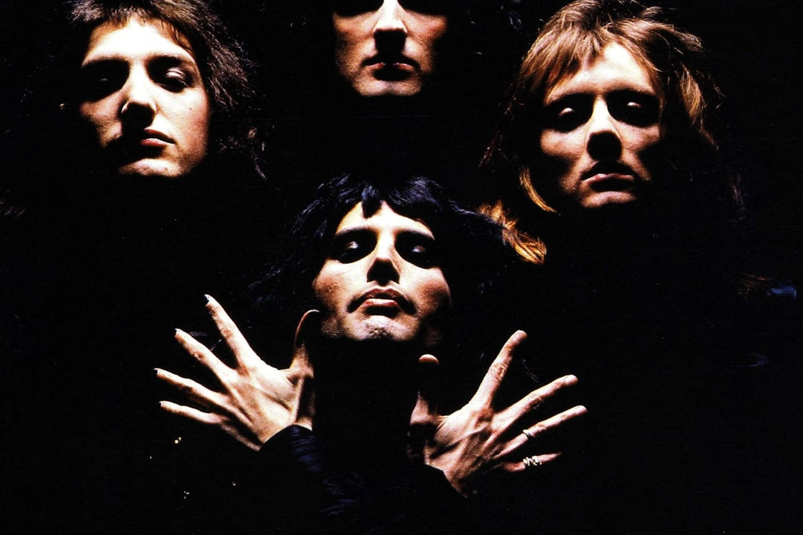
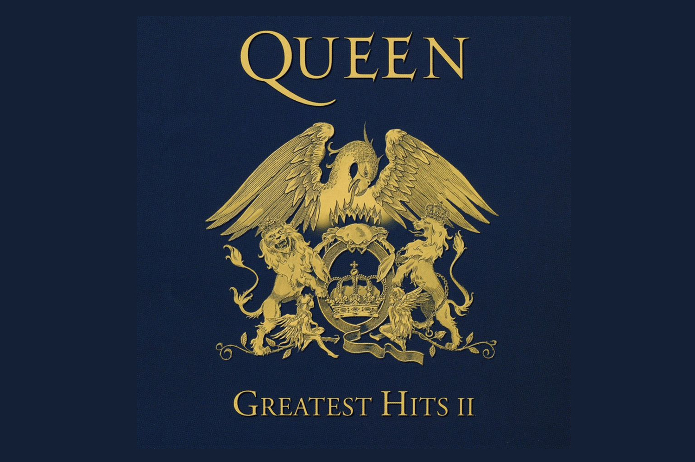
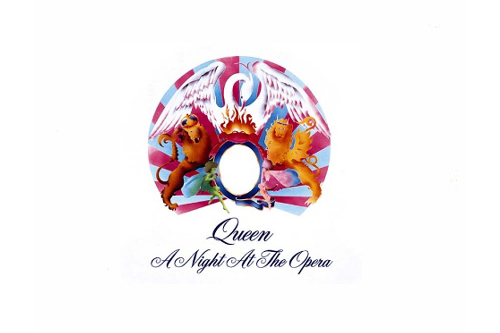

QUEEN II
Queen II es el segundo álbum de estudio por la banda británica Queen. Fue publicado el 8 de marzo de 1974 por EMI Records en el Reino Unido y por Elektra Records en los Estados Unidos. Fue grabado en los estudios Trident, Londres en agosto de 1973.

GREATEST HIT II
Es un álbum compilatorio de la banda de rock Queen, aparecido en 1991. En él se reúnen los éxitos de la banda entre 1981 y 1991. Las ventas de este disco, sumado a su contraparte estadounidense Classic Queen, acumulan más de 20 millones de copias actualmente.

A NIGHT AT THE OPERA
Es el cuarto álbum de estudio de la banda británica de rock Queen, publicado originalmente en 1975. Coproducido por Roy Thomas Baker y Queen, A Night at the Opera fue, en el tiempo de su lanzamiento, la producción más cara realizada.